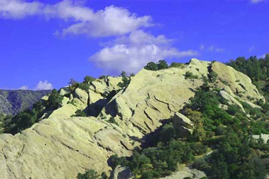
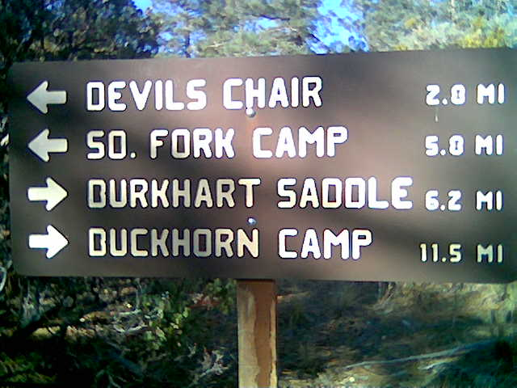
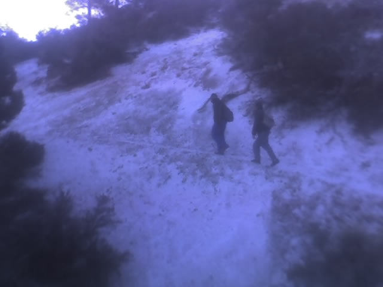
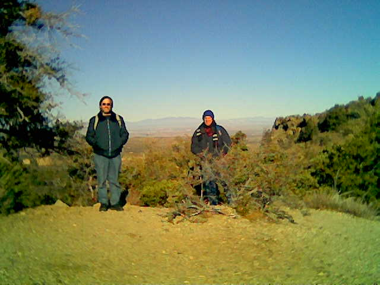
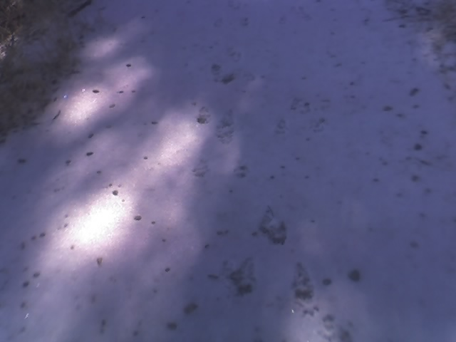
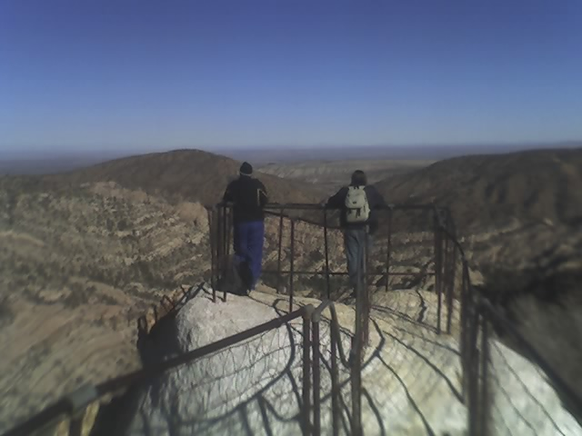

|

Saturday, Jan 13, Rex, Robin and Eric met to hike Devil's Punchbowl.
We hiked to Devil's Chair, a 3.7mi one way (7.4mi round trip) hike that climbs up about 500ft and back down at the end.
The round trip hike took just over 3 hours, an hour less than the 4 the Devil's Punchbowl website says to plan on.

We continued our trend of picking bad weather weekends.
For Godde Hill, Baden-Powell and Bouquet Canyon we picked the one rainy weekend in the month, during a relatively dry year.
For Devil's Punchbowl, a snow storm was predicted for Thursday and Friday, and the Saturday of the hike was the coldest day yet this winter.
We almost chose a more local location, both because of possible snow fall and because of the predicted cold.
However, we decided it would be cold everywhere and kept our original plans to hike Devil's Punchbowl.

We were rewarded with bone chilling cold, but had sun and almost no wind.
The lack of wind made this the most pleasant hike weather-wise, despite temperatures never getting above 30 deg F.
The trail was also very good, contained no really bad climbs and the scenery was unbeatable.

Our early start enabled us to be the first to get to Devil's Chair (we passed the one group that left before us).
Because of this, we enjoyed solitude, quiet and pristine snow along the trail.
We were able see animal tracks as we hiked across several snow fields.
The snow was not really a problem, though, because it was never more than 2 inches deep.

The trail makes a steep descent a little before Devils Chair.
There is then a juntion (with a sign) before a short hike to the chair itself.
The view from Devils Chair is more than worth the hike to get there.

We ate lunch at the end of the hike (around noon) on some stone benches overlooking the Punchbowl.
Then we felt so good, we decided to hike the short (1 mile) loop trail down into the Punchbowl.
In the bowl, we saw awesome rocks and a mostly frozen river.
Rex and Robin conducted physics experiments, using rocks to test the kinetic energy that the ice could survive.
(The rocks eventually won!)
The loop trail comes back up and merges with the very end of the Devil's Chair trail at the point where we ate lunch.
|